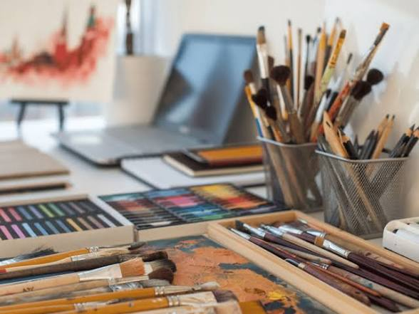

Every great sketch begins with the right tools. Vilas Nayak uses graphite pencils of different grades, charcoal pencils, blending stumps, erasers, sharpeners, and premium drawing sheets to create realistic artworks. These tools help achieve smooth shading, accurate detailing, and lifelike textures.
⬅ Home Next ➜